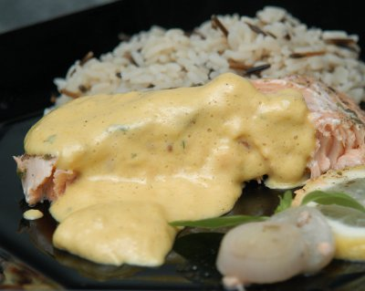

| Zutaten für 4 Personen: | |
| 1 dl | Weisswein |
| 1 El | Weissweinessig |
| 1 | Schalotte |
| 3 | Petersilienstiele |
| 4 | weisse Pfefferkörner, |
| 100 g | Butter |
| 2 | frische Eigelbe |
| Salz und weisser Pfeffer | |
Zubereitungszeit: etwa 30 Minuten. Ergibt etwa 2dl.
Eine Pfanne bereitstellen und den Weisswein und den Essig hineingiessen.
Die Schalotten fein scheiden und beigeben.
Die Petersilienstiele beigeben.
Die Pfefferkörner zerdrücken und beigeben.
Aufkochen und auf etwa 2 Esslöffel einkochen.
Geschirre für ein Wasserbad parat stellen. Das Wasser darf nur leicht sieden. Die Arbeitsschüssel darf das Wasser nicht berühren.
Die Reduktion durch ein feines Sieb in die Arbeitsschüssel absieben und auskühlen lassen.
Die Eigelb dazugeben und mit dem Schwingbesen schlagen, bis die Masse schaumig ist.
Unter rühren die kalten Butterstücke beigeben. Immer darauf achten, dass das Wasser nicht siedet sonst gerinnt die Sauce. (Wenn sie dennoch gerinnt, einen Eiswürfel dazugeben und weiter rühren bis sie wieder cremig ist.)
Nach Bedarf mit Salz und Pfeffer würzen.
Von der Betty Bossi Webseite: Betty Bossi Sauce Hollandaise Rezept
Pro Person: 24g Fett, 2g Eiweiss, 0g Kohlenhydrate, 936kJ (234 kcal)
Schmeckt irre lecker. Gelang mir auch super zu den Spargeln für den Familienbesuch am Muttertag 2012. RE
Bild von einer Sauce Bernaise
@LINKBACK_TAG@ @WAKELOCK@